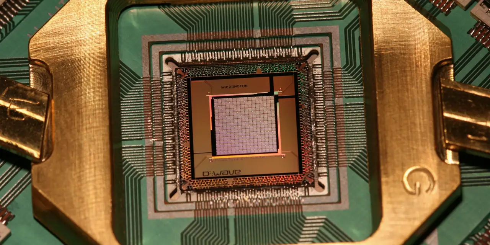

디 웨이브 퀀텀을 볼 때 주주들이 가장 헷갈리는 숫자는 매출이 아니라 예약입니다. 2026년 1분기 매출은 290만 달러였지만, 예약은 3,340만 달러로 크게 뛰었습니다. 겉으로 보면 매출보다 예약이 훨씬 커 보이기 때문에 “상업화가 이미 터졌다”고 읽기 쉽습니다. 그러나 예약은 아직 수행되지 않은 주문의 출발점이고, 실제 주가가 오래 버티려면 그 주문이 RPO와 매출, 그리고 현금흐름으로 넘어가야 합니다.
디 웨이브는 아이온큐나 리게티와 성격이 다릅니다. 회사는 어닐링 양자컴퓨터를 이미 고객 문제에 적용하는 쪽을 강조하면서, Quantum Circuits 인수를 통해 게이트 모델 로드맵도 같이 끌고 가겠다고 말합니다. 이 조합은 매력적이지만, 동시에 투자자가 봐야 할 장부가 두 개로 늘어난다는 뜻입니다. 하나는 오늘 매출을 만드는 어닐링과 QCaaS 장부이고, 다른 하나는 미래 유틸리티를 겨냥한 게이트 모델 연구개발 장부입니다.
디 웨이브의 2026년 1분기 발표에서 가장 중요한 대목은 예약 3,340만 달러, RPO 4,240만 달러, 현금과 시장성 투자증권 5억8,840만 달러입니다. 반대로 조심해서 봐야 할 대목은 매출 290만 달러, 조정 EBITDA 손실 3,280만 달러, Quantum Circuits 인수 관련 비용입니다. 즉, 고객 수요 신호는 강해졌지만 손익계산서에는 아직 그 힘이 충분히 들어오지 않았습니다.
예약은 기대가 아니라 납품 시간표입니다

예약은 고객 주문이 들어왔다는 뜻이지만, 아직 매출 인식이 끝났다는 뜻은 아닙니다. 디 웨이브는 1분기 예약에 플로리다 애틀랜틱 대학교의 2,000만 달러 Advantage2 시스템 구매와 포춘 100 기업의 2년짜리 1,000만 달러 QCaaS 계약이 포함됐다고 밝혔습니다. 이 두 건은 질이 다릅니다. 시스템 판매는 설치와 검수 일정에 따라 매출 시점이 갈리고, QCaaS는 기간에 걸쳐 서비스 매출로 인식될 가능성이 큽니다.
그래서 3,340만 달러 예약을 볼 때는 두 가지를 나눠야 합니다. 첫째, 실제 납품이 필요한 장비 주문입니다. 이 주문은 규모가 크지만 설치가 늦어지면 매출도 늦어집니다. 둘째, 클라우드 서비스 계약입니다. 이 계약은 매출이 조금씩 쌓일 수 있지만 고객 사용량과 갱신 여부가 중요합니다. 예약이 강해졌다는 말은 분명 좋은 신호이지만, 어느 속도로 손익계산서에 내려오는지 확인하기 전에는 과하게 단정하기 어렵습니다.
RPO 4,240만 달러는 이 문제를 조금 더 구체적으로 보여줍니다. 회사는 이 중 약 54%가 다음 12개월 안에 매출로 인식될 것으로 예상한다고 밝혔습니다. 이 비율이 유지되면 디 웨이브는 단순 발표 기업이 아니라 계약을 매출로 바꾸는 회사로 평가받을 수 있습니다. 반대로 다음 분기와 그 다음 분기에도 매출이 낮고 RPO만 쌓인다면, 시장은 “수요는 있는데 실행 속도가 느리다”고 볼 수 있습니다.
Advantage2는 범용 컴퓨터가 아니라 최적화 도구입니다
관련 영상
디 웨이브 퀀텀 2026년 1분기 실적과 듀얼 플랫폼 투자 논리를 설명하는 한국어 롱폼 영상
Advantage2 일반 공개 자료를 보면 디 웨이브가 노리는 시장이 더 분명해집니다. 회사는 4,400개 이상 큐비트, Zephyr 토폴로지의 20방향 연결성, Leap 클라우드의 99.9% 가용성, 40개 이상 국가 접근성을 강조합니다. 이 문장은 양자컴퓨터를 연구실 장난감이 아니라 기업용 최적화 장비로 팔겠다는 뜻에 가깝습니다.
하지만 Advantage2를 범용 양자컴퓨터처럼 이해하면 판단이 흐려집니다. 디 웨이브의 강점은 모든 문제를 푸는 것이 아니라, 물류 경로, 작업 배정, 자원 배분, 재료 시뮬레이션, 일정 최적화처럼 특정 형태의 복잡한 조합 문제를 빠르게 다루는 쪽에 있습니다. 이 장점은 상업화 속도를 앞당길 수 있지만, 동시에 적용 범위가 고객 문제와 잘 맞아야 한다는 조건을 달고 있습니다.
이 때문에 주주는 “큐비트가 많다”보다 “고객이 어떤 문제를 돈 내고 맡기는가”를 봐야 합니다. 포춘 100 기업의 QCaaS 계약, 플로리다 애틀랜틱 대학교 시스템 구매, 일본 제약사 Shionogi와의 Quantum AI 프로젝트 같은 사례는 디 웨이브가 실제 고객 사례를 만들고 있다는 신호입니다. 다만 개별 사례가 반복 가능한 판매 공식이 되려면 영업 비용, 설치 기간, 서비스 갱신률이 같이 좋아져야 합니다.
게이트 모델 인수는 장기 옵션이지만 비용도 따라옵니다
디 웨이브가 Quantum Circuits를 인수한 이유는 어닐링만으로는 양자컴퓨팅 전체 시장을 설명하기 어렵기 때문입니다. 회사는 어닐링으로 현재의 최적화 수요를 잡고, 게이트 모델로 미래의 오류 보정형 양자컴퓨팅 가능성을 열겠다는 전략을 보입니다. 투자자 입장에서는 이것이 좋은 선택일 수 있습니다. 고객에게 오늘 쓸 수 있는 솔루션을 팔면서, 동시에 장기 플랫폼 서사를 유지할 수 있기 때문입니다.
문제는 인수와 연구개발이 공짜가 아니라는 점입니다. 2026년 1분기 GAAP 영업비용은 5,650만 달러로 늘었고, 회사는 Quantum Circuits 인수 관련 일회성 비용과 인력·연구개발·영업 확대 비용을 언급했습니다. 매출 290만 달러인 회사가 게이트 모델 로드맵까지 끌고 가려면 현금 방어력이 중요합니다. 현재 현금과 시장성 투자증권 5억8,840만 달러는 강하지만, 투자자는 손실 속도가 빨라지는지 늦춰지는지 계속 확인해야 합니다.
게이트 모델 로드맵도 너무 먼 미래 숫자로만 보면 위험합니다. 회사는 2028년, 2030년, 2032년을 향한 물리 큐비트와 논리 큐비트 목표를 제시했습니다. 이런 로드맵은 기술적 방향을 보여주지만, 단기 주주에게 더 중요한 것은 당장 예약과 RPO가 매출로 바뀌는 속도입니다. 장기 옵션이 좋아도 현재 사업이 계속 손실을 키우면 주가는 기술 비전보다 현금 소진을 먼저 반영할 수 있습니다.
디 웨이브 주주가 다음 실적에서 볼 질문
첫 번째 질문은 RPO의 12개월 전환율입니다. 4,240만 달러 중 약 54%가 12개월 안에 매출로 잡힌다는 회사의 설명이 실제 분기 매출에서 확인되어야 합니다. 두 번째 질문은 FAU 시스템 판매의 설치 일정입니다. 설치가 2026년 안에 시작되더라도 실제 매출 인식은 검수와 계약 조건에 따라 달라질 수 있습니다. 시스템 판매는 한 번에 큰 매출을 만들 수 있지만, 분기별 변동성도 크게 만듭니다.
세 번째 질문은 QCaaS 계약의 갱신과 확장입니다. 포춘 100 기업의 2년짜리 계약은 좋은 신호이지만, 그 고객이 더 많은 워크로드를 올리고 계약을 늘려야 플랫폼 매출로 인정받을 수 있습니다. 네 번째 질문은 매출총이익률입니다. 2025년 1분기에는 시스템 판매가 매출과 총이익률을 크게 끌어올렸고, 2026년 1분기에는 그 효과가 빠지면서 비교가 어려워졌습니다. 따라서 단순 전년 대비 매출 감소만 보고 판단하면 흐름을 놓칠 수 있습니다.
마지막 질문은 경쟁사와의 차이입니다. 아이온큐는 RPO와 대형 시스템 판매, 리게티는 초전도 칩렛과 클라우드 접근성, 퀀텀 컴퓨팅은 포토닉스 제조와 현금 보유를 강조합니다. 디 웨이브는 실제 최적화 문제와 어닐링 상업화를 앞세웁니다. 이 차별점이 계속 유지되려면 고객 사례가 연구 발표가 아니라 계약, 매출, 갱신으로 이어져야 합니다.
디 웨이브 퀀텀은 양자컴퓨팅 테마 안에서 가장 현실적인 고객 사례를 말할 수 있는 회사 중 하나입니다. 그러나 현실적인 사례가 있다는 것과 이미 수익성 있는 플랫폼이 됐다는 것은 다릅니다. 지금 주주에게 필요한 것은 예약 증가에 환호하는 것보다, RPO 전환, Advantage2 설치, QCaaS 사용량, Quantum Circuits 비용, 조정 EBITDA 손실을 한 줄씩 확인하는 태도입니다. 그 숫자가 같이 좋아질 때 디 웨이브의 이야기는 “양자컴퓨팅 테마주”에서 “기업 고객이 돈을 내는 최적화 인프라”로 바뀔 수 있습니다.